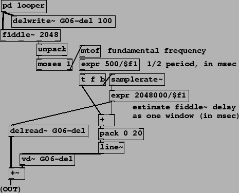
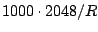
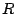
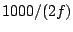
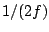
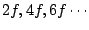
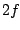
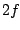

In example G06.octave.doubler.pd (Figure 7.29) we revisit the idea of pitch-based octave shifting introduced earlier in E03.octave.divider.pd. There, knowing the periodicity of an incoming sound allowed us to tune a ring modulator to introduce subharmonics. Here we realize the octave doubler described in Section 7.3. Using a variable, non-recirculating comb filter we take out odd harmonics, leaving only the even ones, which sound an octave higher. As before, the spectral envelope of the sound is roughly preserved by the operation, so we can avoid the ``chipmunk" effect we would have got by using speed change to do the transposition.
|  |
The comb filtering is done by combining two delayed copies of the incoming signal (from the pd looper subpatch at top). The fixed one (delread~) is set to the window size of the pitch following algorithm. Whereas in the earlier example this was hidden in another subpatch, we can now show this explicitly. The delay in milliseconds is estimated as equal to the 2048-sample analysis window used by the fiddle~ object; in milliseconds this comes to  where  is the sample rate.
The variable delay is the same, plus 1/2 of the measured period of the incoming
sound, or  milliseconds where  is the frequency in cycles per
second. The sum of this and the fixed delay time is then smoothed using a
line~ object to make the input signal for the variable delay line.
is the frequency in cycles per
second. The sum of this and the fixed delay time is then smoothed using a
line~ object to make the input signal for the variable delay line.
Since the difference between the two delays is , the resonant
frequencies of the resulting comb filter are
; the frequency
response (Section 7.3) is zero at the frequencies  ,
so the resulting sound contains only the partials at multiples of --an
octave above the original. Seen another way, the incoming sound is output
twice, a half-cycle apart; odd harmonics are thereby shifted 180 degrees
(
,
so the resulting sound contains only the partials at multiples of --an
octave above the original. Seen another way, the incoming sound is output
twice, a half-cycle apart; odd harmonics are thereby shifted 180 degrees
( radians) and cancel; even harmonics are in phase with their delayed
copies and remain in the sum.
radians) and cancel; even harmonics are in phase with their delayed
copies and remain in the sum.
Both this and the octave divider may be altered to make shifts of 3 or 4 to one in frequency, and they may also be combined to make compound shifts such as a musical fifth (a ratio of 3:2) by shifting down an octave and then back up a factor of three. (You should do the down-shifting before the up-shifting for best results.)